Study points and highlights from Chapters 0-8
Gregory S. DeLozier, PhD
Explain why, not just what prints.
| Module | Pattern we reuse |
|---|---|
| Tokenizer | Match, tag, convert, advance |
| Parser | Consume a rule; return node and remainder |
| Tree | Tags select behavior; children hold substructure |
| Evaluator | Evaluate children; check status; perform work |
| Runner | Connect stages; handle program exit |
Learn the patterns as well as the individual features.
| Question | Concept |
|---|---|
| Is this arrangement legal? | Syntax |
| What does it do? | Semantics |
| What machinery runs it? | Implementation |
A grammar alone does not define execution.

An abstract syntax tree (AST) records operations and grouping.
| Approach | Work performed |
|---|---|
| Interpreter | Execute the program representation |
| Compiler | Translate it for later execution |
| Transpiler | Translate to another source language |
| Just-in-time compiler | Compile during execution |
Different routes; preserve the program’s meaning.
| Recognize first | Otherwise |
|---|---|
// comment before / |
Two division tokens |
| Decimal forms before integers | Only the initial digits match |
<= before < |
One operator becomes two |
| Keywords before identifiers | Keywords become names |
Word boundaries keep printer an
identifier.
3 + 4 * 5

Result: 23. The grouping is already in the tree.
| Expression | Grouping | Result |
|---|---|---|
8 - 3 - 2 |
(8 - 3) - 2 |
3 |
8 / 4 / 2 |
(8 / 4) / 2 |
1.0 |
3 * -2 |
3 * (-2) |
-6 |
--3 |
-(-3) |
3 |
Precedence separates levels; associativity groups a chain.
Extended Backus-Naur Form (EBNF):
term ::= unary { ("*" | "/") unary }
unary ::= "-" unary | factor{ ... } means repetition; [ ... ] means
optional.term ::= unary { ("*" | "/") unary }
logic_and ::= logic_not { "and" logic_not }| Grammar pattern | Parser pattern | Example |
|---|---|---|
[ ... ] |
Check with if |
One comparison; optional else |
{ ... } |
Check with while |
More arithmetic or logical operands |
| Prefix followed by same rule | Recursive call | Unary minus; logical not |
| Required sequence | Consume each part | Identifier, =, expression |
The grammar suggests the control structure.
| Feature | Structure reused |
|---|---|
| String or boolean literal | A tagged node with a value |
Arithmetic, comparison, and |
A tag with left and right children |
Conversion or type() |
One expression child |
| Program, branch, loop body | A statement-list node |
Similar nodes can still have different evaluation rules.
| Source fragment | Stage | Reason |
|---|---|---|
3 @ 4 |
Tokenizer | Unrecognized character |
3 + * 4 |
Parser | Operand missing |
3 4 |
Parser | Leftover token |
3 / 0 |
Evaluator | Division by zero |
missing + 1 |
Evaluator | Unknown identifier |
x = 2;
y = x + 3 * 4;
x = x + 1;| After statement | x |
y |
|---|---|---|
| First | 2 | Not bound |
| Second | 2 | 14 |
| Third | 3 | 14 |
| Environment | Bindings |
|---|---|
| Current | x: 3, $PARENT: parent |
| Parent | x: 10, y: 20 |
x: 3. Lookup y:
20.y = 7: writes
here.y stays 20.| Expression | Result |
|---|---|
"3" + "4" |
"34" |
number("3") + 4 |
7 |
"ha" * 3 |
"hahaha" |
"ha" * 2.0 |
Type error |
"Answer: " + string(42) |
"Answer: 42" |
__input = "21";
answer = number(input()) * 2;
print(answer);| Observation | Result |
|---|---|
answer |
Number 42 |
__input |
Empty string, consumed |
__output |
String "42" |
| Change | Earlier | Later |
|---|---|---|
| Print spelling | print x |
print(x) |
number(42) |
Type error in Strings and Basic I/O | 42 with Booleans and Comparisons |
| Evaluator return | A value | (value, status) with Returning Status |
New keywords can also invalidate old variable names.
| Expression | Result |
|---|---|
1 == 1.0 |
true |
true == 1 |
false |
"1" == 1 |
false |
true + 1 |
Type error |
"ant" < "bee" |
true |
Ordering accepts two numbers or two strings, not booleans.
| Expression | Result |
|---|---|
boolean(0) |
false |
boolean(" FALSE ") |
false |
boolean("0") |
Value error |
number(true) |
1 |
type(.5) |
"number" |
type(1 < 2) |
"boolean" |
Weakest to strongest:
or → and → not → comparison → arithmetic
| Source | Meaning |
|---|---|
a or b and c |
a or (b and c) |
not x == y |
not (x == y) |
&&, ||, ! |
Same tags as and, or,
not |
divisor = 0;
safe = divisor != 0 and 10 / divisor > 2;| Left value | Operator | Right operand |
|---|---|---|
false |
and |
Skipped |
true |
or |
Skipped |
No evaluation means no input, lookup, or runtime error.
| Evaluation | Python result pair |
|---|---|
2 + 3 |
(5, None) |
2 > 3 |
(False, None) |
print(5) |
(None, None) |
exit(7) |
(7, "exit") |
| Failed assertion | (1, "exit") |
A false value is not a special status.
value, status = evaluate(child, environment)
if status is not None:
return value, status
# Only now use the value or perform the next effect.The same check protects assignment, print, conversions, arithmetic, conditions, and statement lists.

x = 3;
x = exit(7) + number(input());No input. No addition. No store. x stays
3.
assert answer == 42, "Expected 42";x = 1;
if (true) {
x = 2;
} else {
exit(9);
};
print(x);Prints 2. Only the selected block runs.
if (true) { x = 1; } else { x = 2; };
print(x);else.if from the next statement.// comment is not a
separator.i = 0;
while (i < 3) {
print(i);
i = i + 1;
}Three body executions, four condition checks.
Output: 0, 1, 2. Final
i: 3.
| Body result | Nearest while does what? |
|---|---|
| Normal completion | Recheck condition |
continue |
Skip rest of body; recheck condition |
break |
Finish normally |
exit |
Propagate outward |
An inner loop consumes its own break, not the outer loop’s work.
Newton’s square-root update:
guess = (guess + S / guess) / 2;newton.v combines arithmetic, state, loops, and
assertions.
When a result surprises you, locate the rule that explains it.